Jij leest voor, het klinkt mee
Lees een sprookje hardop en hoor het bos ruisen, de deur kloppen en de wolf grommen, precies op het goede woord. Je telefoon volgt je stem.
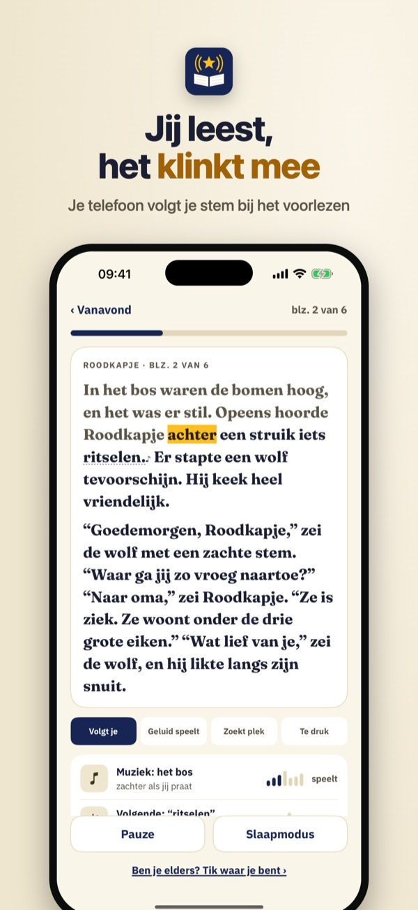
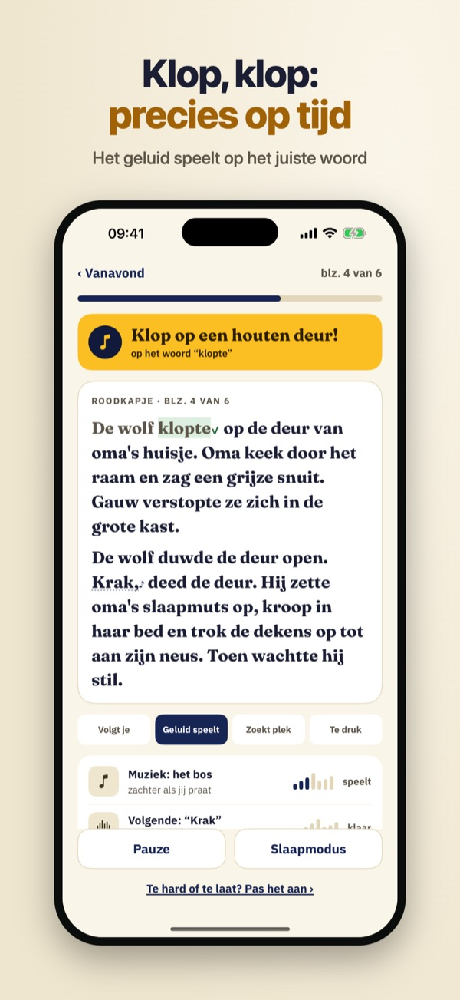
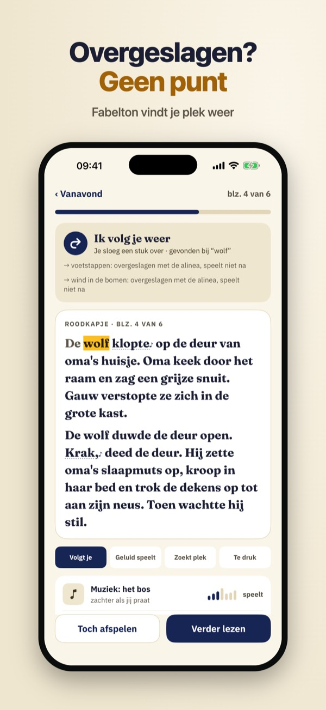
Fabelton maakt van voorlezen een klein hoorspel. Jij leest een sprookje hardop; je telefoon volgt je stem en speelt geluiden en zachte muziek af op het juiste moment. De verhalen zitten in de app: onze eigen hervertellingen van klassieke sprookjes van Grimm, Andersen en Perrault.
Drie verhalen met alle geluiden, het volgen van je stem en de slaapmodus werken zonder aankoop. Fabelton Plus is een eenmalige aankoop: alle verhalen in jouw taal, nieuwe verhalen in updates en delen met je gezin. Geen abonnement, geen reclame.
Fabelton luistert alleen terwijl je voorleest en herkent woorden op je telefoon. Er wordt geen geluid of tekst opgeslagen of verstuurd. Het volgen kan zich vergissen; tik dan op de alinea waar je bent. Zonder microfoon tik je zelf op de geluiden. Fabelton is bedoeld voor ouders die voorlezen.
Terms of Use (EULA): https://www.apple.com/legal/internet-services/itunes/dev/stdeula/
Privacy: https://baytechbv.github.io/privacy/fabelton-eu/
Du läser högt, sagan får ljud
Läs en saga högt och hör skogen susa, dörren knacka och vargen morra, precis på rätt ord. Mobilen följer din röst.
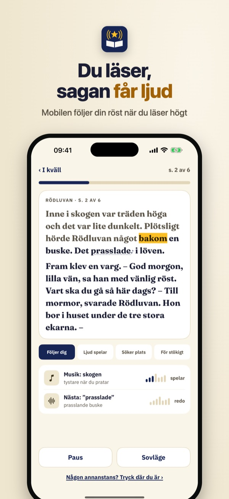
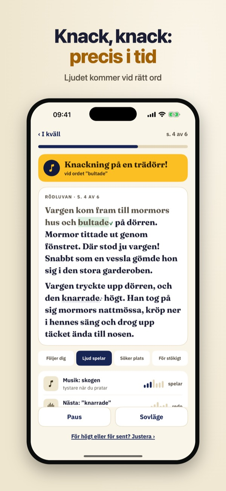
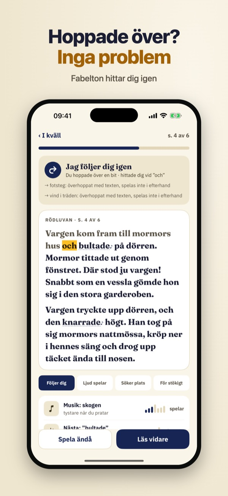
Fabelton gör högläsning till ett litet hörspel. Du läser en saga högt; mobilen följer din röst och spelar ljud och lugn musik i rätt ögonblick. Sagorna finns i appen: våra egna återberättelser av klassiska sagor av Grimm, Andersen och Perrault.
Tre sagor med alla ljud, röstföljning och sovläget fungerar utan köp. Fabelton Plus är ett engångsköp: alla sagor på ditt språk, nya sagor i uppdateringar och delning med familjen. Ingen prenumeration, ingen reklam.
Fabelton lyssnar bara medan du läser och känner igen ord i mobilen. Inget ljud eller text sparas eller skickas. Följningen kan ta fel; tryck då på stycket där du är. Kan din iPhone inte känna igen svenska i enheten trycker du själv på ljuden. Fabelton är gjord för föräldrar som läser högt.
Terms of Use (EULA): https://www.apple.com/legal/internet-services/itunes/dev/stdeula/
Privacy: https://baytechbv.github.io/privacy/fabelton-eu/
Læs højt – eventyret får lyd
Læs et eventyr højt, og hør skoven suse, døren banke og ulven knurre, præcis på det rigtige ord. Mobilen følger din stemme.
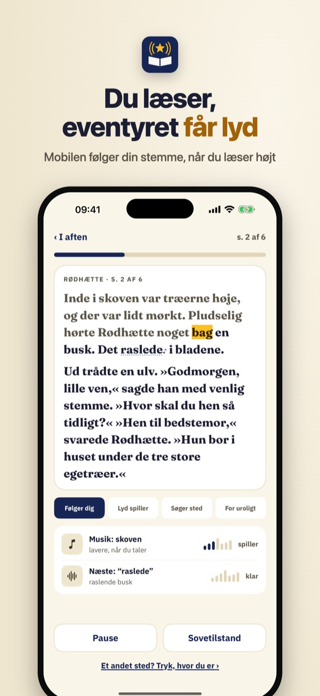
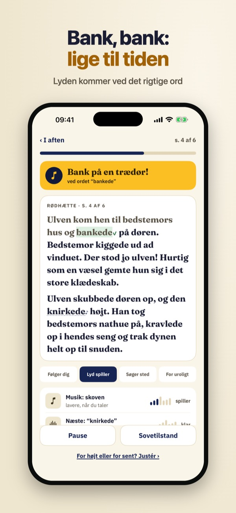
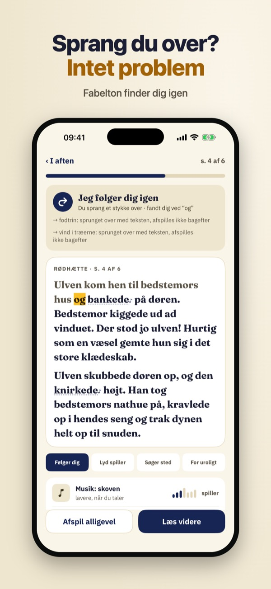
Fabelton gør højtlæsning til et lille hørespil. Du læser et eventyr højt; mobilen følger din stemme og spiller lyde og rolig musik i det rigtige øjeblik. Eventyrene følger med appen: vores egne genfortællinger af klassiske eventyr af Grimm, Andersen og Perrault.
Tre eventyr med alle lyde, stemmefølgning og sovetilstand virker uden køb. Fabelton Plus er et engangskøb: alle eventyr på dit sprog, nye eventyr i opdateringer og deling med familien. Intet abonnement, ingen reklamer.
Fabelton lytter kun, mens du læser, og genkender ord på mobilen. Ingen lyd eller tekst gemmes eller sendes. Følgningen kan tage fejl; tryk så på det afsnit, du er ved. Kan din iPhone ikke genkende dansk på enheden, trykker du selv på lydene. Fabelton er lavet til forældre, der læser højt.
Terms of Use (EULA): https://www.apple.com/legal/internet-services/itunes/dev/stdeula/
Privacy: https://baytechbv.github.io/privacy/fabelton-eu/
Les høyt – eventyret får lyd
Les et eventyr høyt, og hør skogen suse, døren banke og ulven knurre, akkurat på riktig ord. Mobilen følger stemmen din.
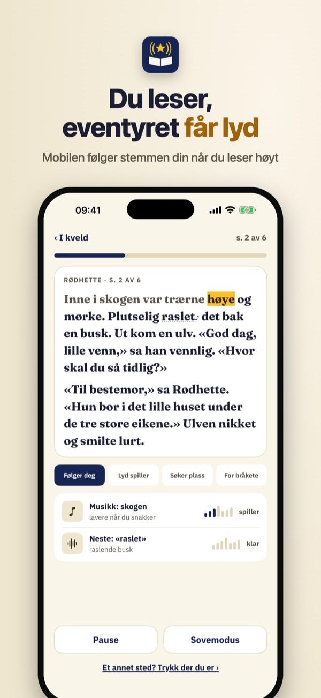
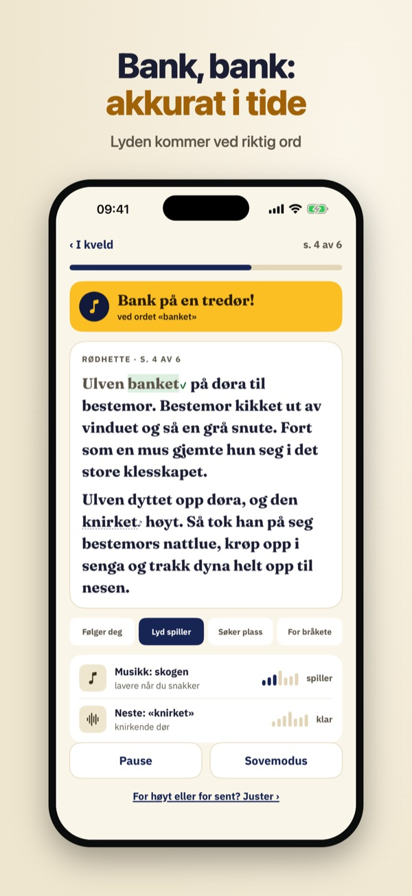
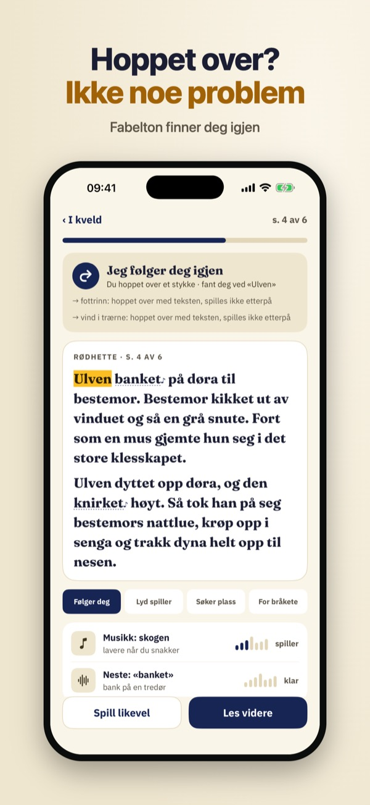
Fabelton gjør høytlesning til et lite hørespill. Du leser et eventyr høyt; mobilen følger stemmen din og spiller lyder og rolig musikk i riktig øyeblikk. Eventyrene følger med appen: våre egne gjenfortellinger av klassiske eventyr av Grimm, Andersen og Perrault.
Tre eventyr med alle lyder, stemmefølging og sovemodus virker uten kjøp. Fabelton Plus er et engangskjøp: alle eventyr på ditt språk, nye eventyr i oppdateringer og deling med familien. Ingen abonnement, ingen reklame.
Fabelton lytter bare mens du leser, og gjenkjenner ord på mobilen. Ingen lyd eller tekst lagres eller sendes. Følgingen kan ta feil; trykk da på avsnittet du er ved. Kan ikke iPhonen din gjenkjenne norsk på enheten, trykker du selv på lydene. Fabelton er laget for foreldre som leser høyt.
Terms of Use (EULA): https://www.apple.com/legal/internet-services/itunes/dev/stdeula/
Privacy: https://baytechbv.github.io/privacy/fabelton-eu/
Sinä luet, satu soi mukana
Lue satu ääneen ja kuule metsän humina, oven koputus ja suden murina juuri oikeassa kohdassa. Puhelin seuraa ääntäsi.
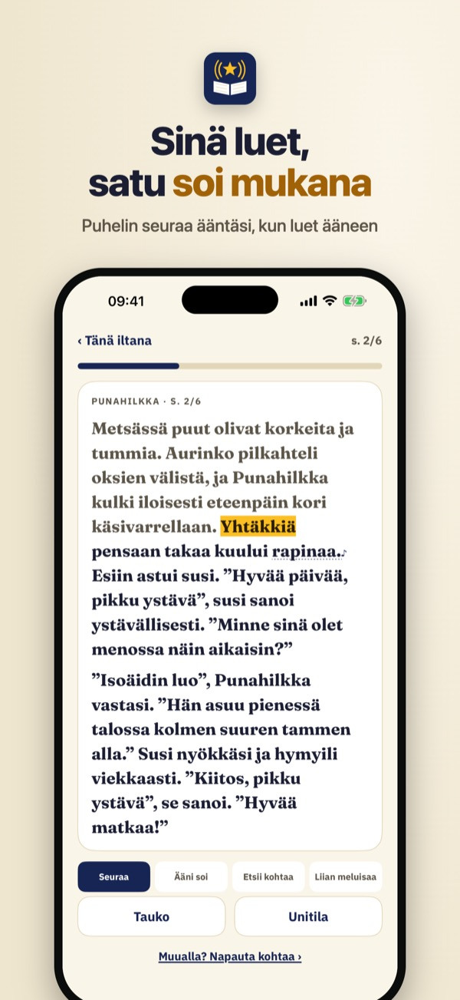
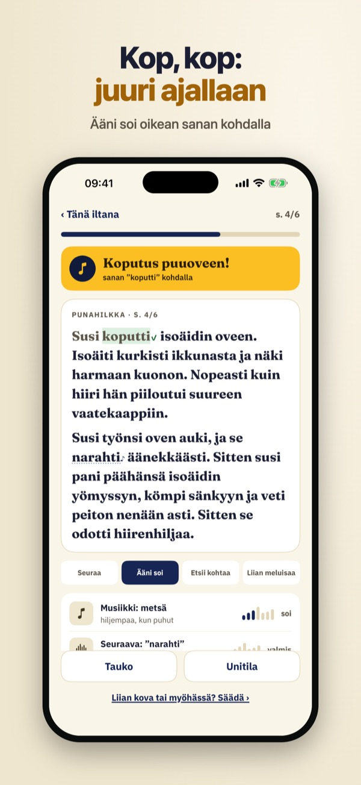
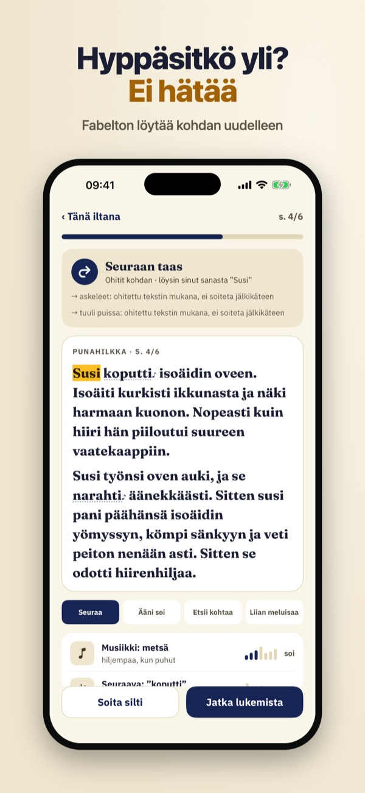
Fabelton tekee ääneen lukemisesta pienen kuunnelman. Sinä luet sadun ääneen; puhelin seuraa ääntäsi ja soittaa äänet ja rauhallisen musiikin oikealla hetkellä. Sadut tulevat sovelluksen mukana: omia uudelleenkerrontojamme Grimmin, Andersenin ja Perrault’n klassisista saduista.
Kolme satua kaikkine äänineen, äänen seuraaminen ja unitila toimivat ilman ostoa. Fabelton Plus on kertaosto: kaikki sadut omalla kielelläsi, uudet sadut päivityksissä ja jakaminen perheen kanssa. Ei tilausta, ei mainoksia.
Fabelton kuuntelee vain, kun luet, ja tunnistaa sanat puhelimessa. Ääntä tai tekstiä ei tallenneta eikä lähetetä. Seuraaminen voi erehtyä; napauta silloin kappaletta, jossa olet. Jos iPhonesi ei tunnista suomea laitteessa, napautat äänet itse. Fabelton on tehty ääneen lukeville vanhemmille.
Terms of Use (EULA): https://www.apple.com/legal/internet-services/itunes/dev/stdeula/
Privacy: https://baytechbv.github.io/privacy/fabelton-eu/
Vous lisez, le conte s’anime
Lisez un conte à voix haute et entendez la forêt bruisser, la porte frapper et le loup gronder, au bon mot. Le téléphone suit votre voix.
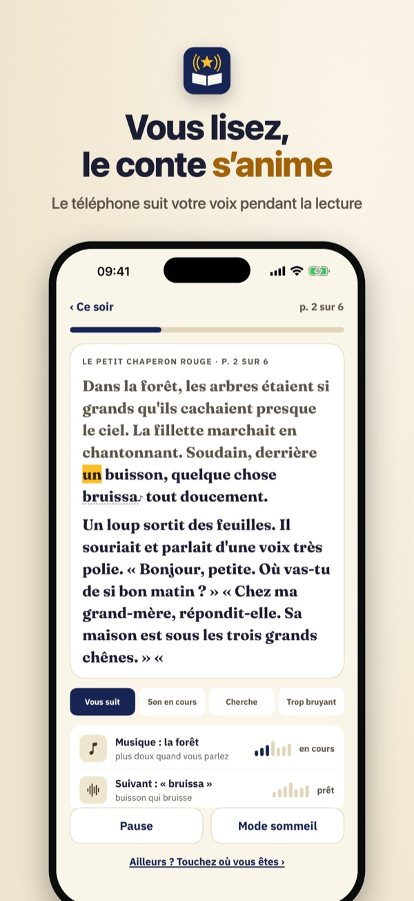
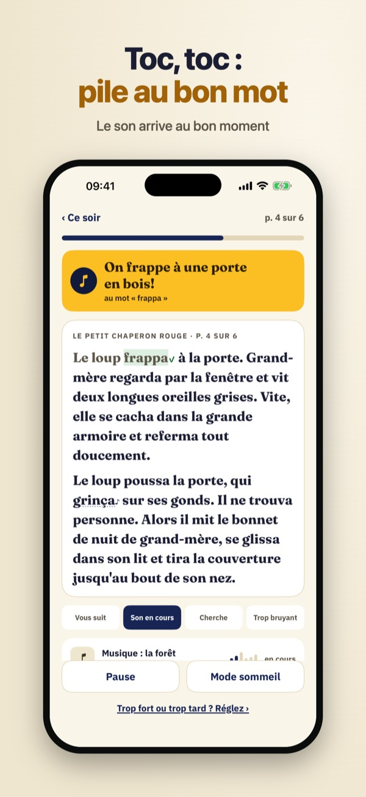
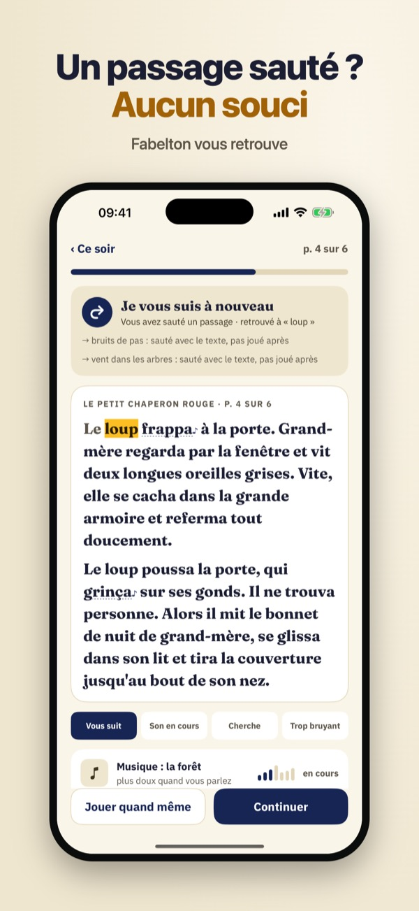
Fabelton transforme la lecture du soir en petite pièce sonore. Vous lisez un conte à voix haute ; le téléphone suit votre voix et joue bruitages et musique douce au bon moment. Les contes sont inclus : nos propres réécritures des contes classiques de Grimm, Andersen et Perrault.
Trois contes avec tous les sons, le suivi de la voix et le mode sommeil fonctionnent sans achat. Fabelton Plus est un achat unique : tous les contes dans votre langue, de nouveaux contes dans les mises à jour et le partage familial. Sans abonnement, sans pub.
Fabelton n’écoute que pendant la lecture et reconnaît les mots sur le téléphone. Aucun son ni texte n’est conservé ou envoyé. Le suivi peut se tromper ; touchez alors le paragraphe où vous êtes. Sans micro, touchez vous-même les sons. Fabelton est conçu pour les parents qui lisent à voix haute.
Terms of Use (EULA): https://www.apple.com/legal/internet-services/itunes/dev/stdeula/
Privacy: https://baytechbv.github.io/privacy/fabelton-eu/
Du liest vor, es klingt mit
Lies ein Märchen vor und hör den Wald rauschen, die Tür klopfen und den Wolf knurren, genau beim richtigen Wort. Das Handy folgt deiner Stimme.
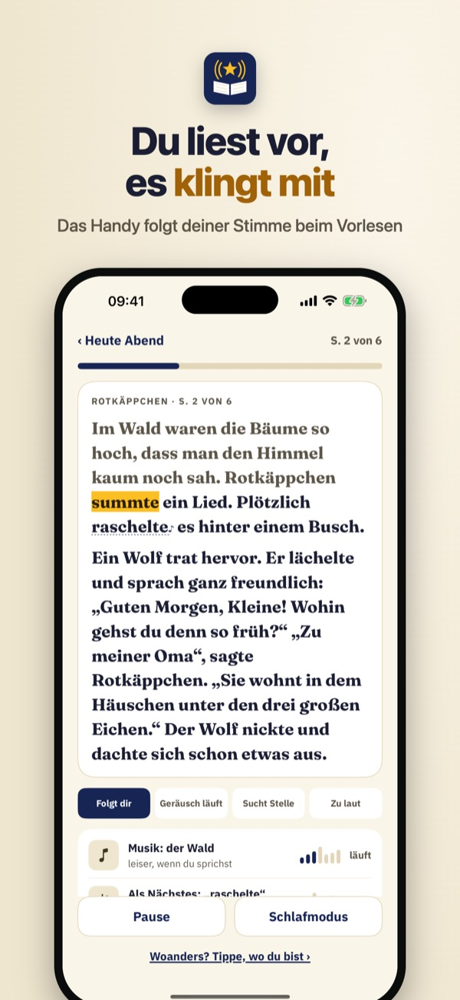
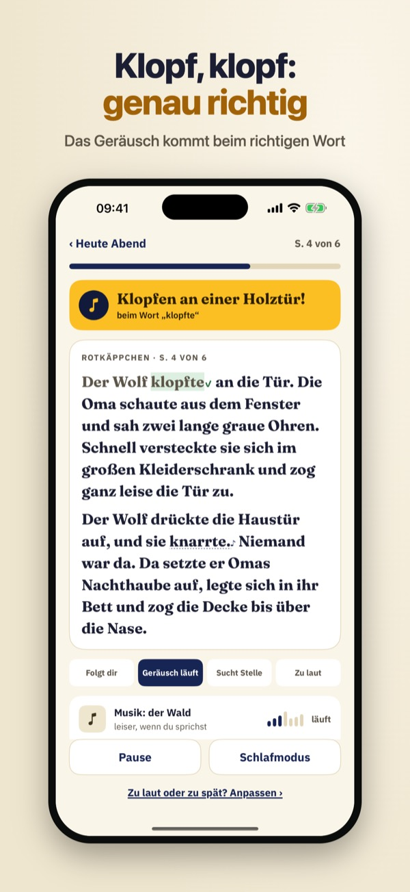
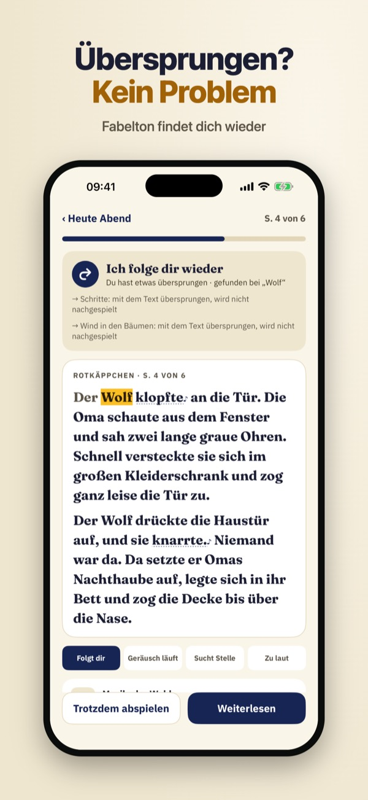
Fabelton macht aus dem Vorlesen ein kleines Hörspiel. Du liest ein Märchen laut vor; das Handy folgt deiner Stimme und spielt Geräusche und ruhige Musik im richtigen Moment. Die Märchen sind dabei: unsere eigenen Nacherzählungen klassischer Märchen von Grimm, Andersen und Perrault.
Drei Märchen mit allen Geräuschen, das Mitfolgen der Stimme und der Schlafmodus funktionieren ohne Kauf. Fabelton Plus ist ein Einmalkauf: alle Märchen in deiner Sprache, neue Märchen mit Updates und Familienfreigabe. Kein Abo, keine Werbung.
Fabelton hört nur zu, während du vorliest, und erkennt Wörter auf dem Handy. Es wird kein Ton und kein Text gespeichert oder gesendet. Das Mitfolgen kann sich irren; tippe dann auf den Absatz, bei dem du bist. Ohne Mikrofon tippst du die Geräusche selbst an. Fabelton ist für Eltern gemacht, die vorlesen.
Terms of Use (EULA): https://www.apple.com/legal/internet-services/itunes/dev/stdeula/
Privacy: https://baytechbv.github.io/privacy/fabelton-eu/
Tú lees, el cuento suena
Lee un cuento en voz alta y oye el bosque susurrar, la puerta llamar y el lobo gruñir, justo en la palabra correcta. El móvil sigue tu voz.
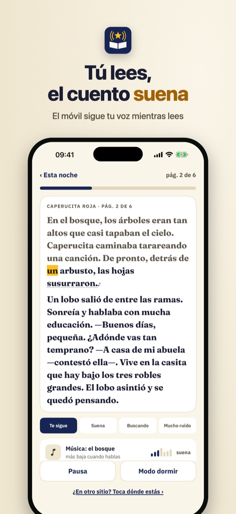
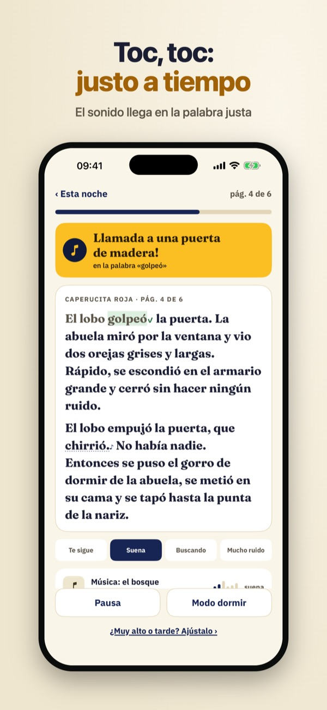
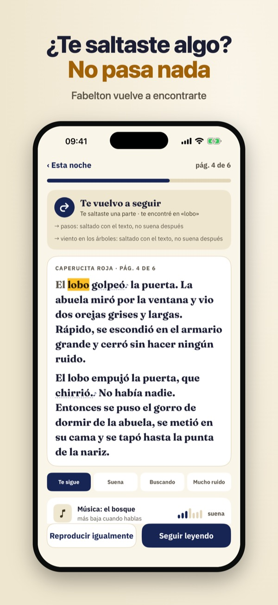
Fabelton convierte la lectura en voz alta en un pequeño radioteatro. Tú lees un cuento; el móvil sigue tu voz y reproduce sonidos y música suave en el momento justo. Los cuentos vienen en la app: nuestras propias versiones de cuentos clásicos de Grimm, Andersen y Perrault.
Tres cuentos con todos los sonidos, el seguimiento de la voz y el modo dormir funcionan sin compra. Fabelton Plus es una compra única: todos los cuentos en tu idioma, cuentos nuevos en las actualizaciones y En familia. Sin suscripción, sin anuncios.
Fabelton solo escucha mientras lees y reconoce las palabras en el móvil. No se guarda ni se envía sonido ni texto. El seguimiento puede fallar; toca entonces el párrafo donde estás. Sin micrófono, tocas tú los sonidos. Fabelton está pensado para padres que leen en voz alta.
Terms of Use (EULA): https://www.apple.com/legal/internet-services/itunes/dev/stdeula/
Privacy: https://baytechbv.github.io/privacy/fabelton-eu/